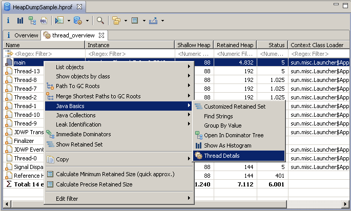

A thread is the path a program is executed. Multithreaded applications run many threads concurrently within a single program. To analyze all the threads in the heap dump use the query:
You can proceed with the analysis of a single thread by using context menu.